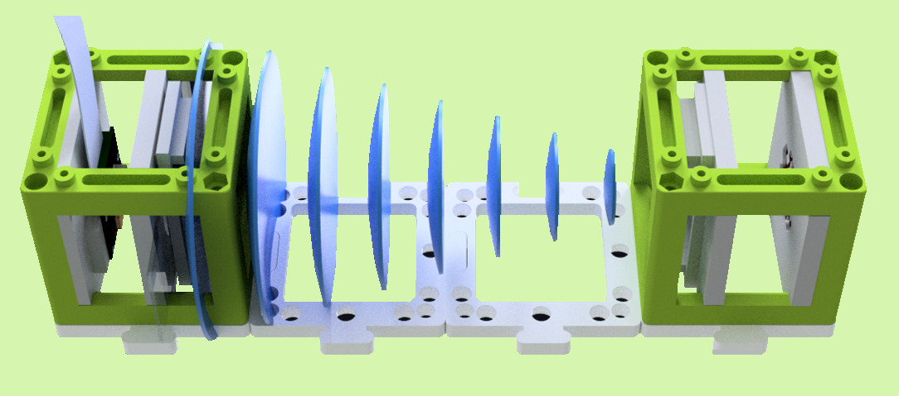
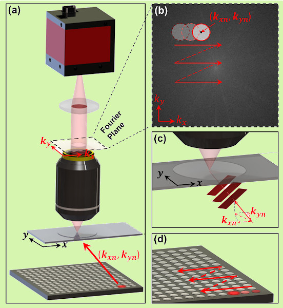
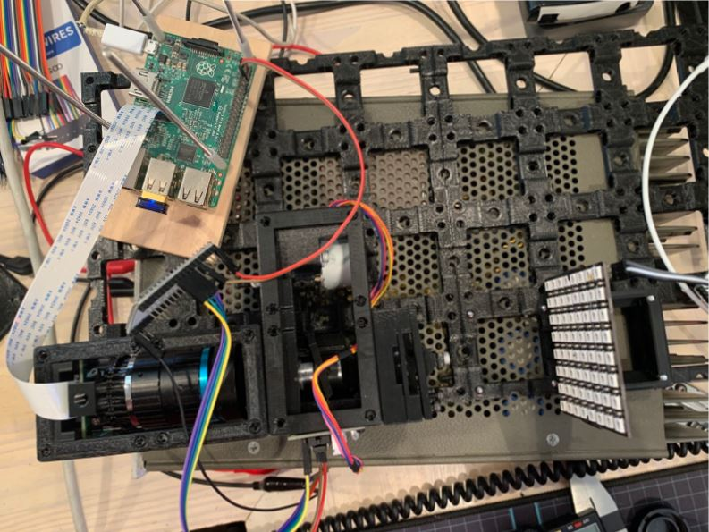
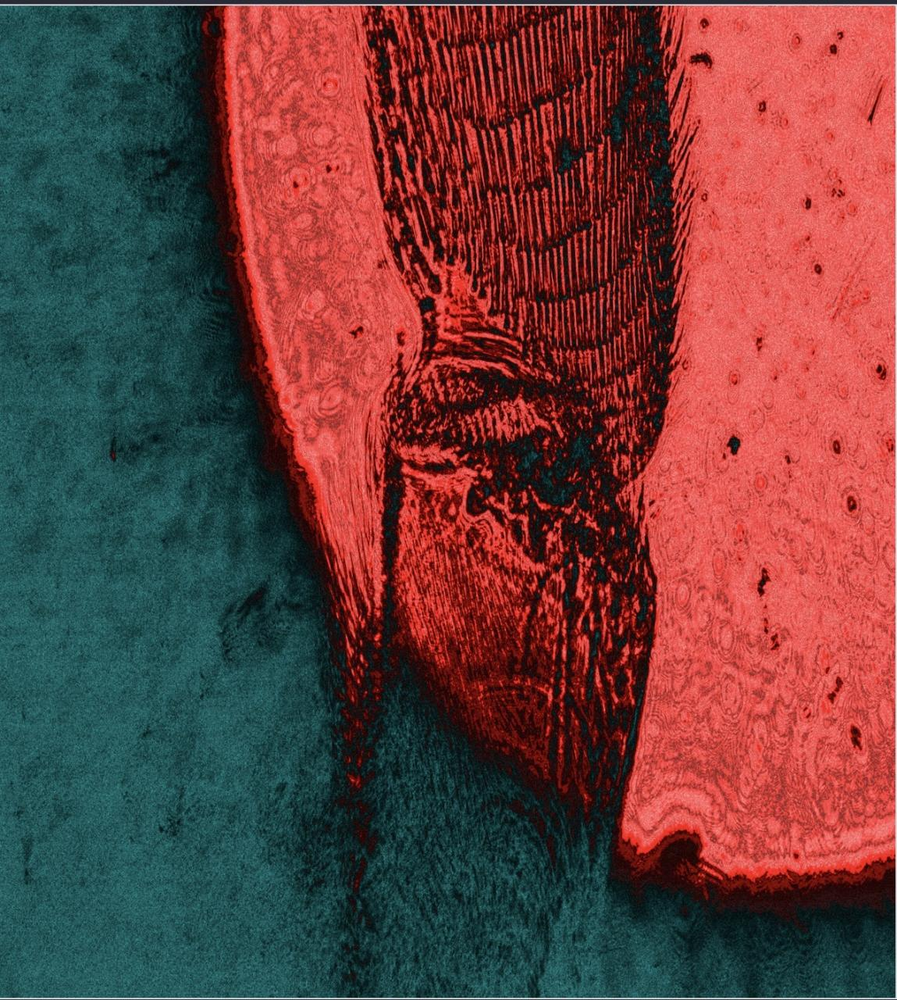

In the summer after my sophomore year, I attended a data science REU through Harvey Mudd College. This was quite a broad topic so individual groups main goals varied. In my particular group with Josh Brake, we worked on Biophotonics in three subgroups. This was my first introduction to the field on Computational Imaging and found myself fascinated by how widely used it is in modern technology. We looked at examples of telescopes, MRI machines, and phone cameras to scratch the surface before diving into the specific innerworkings of the techniques we would study and attempt to implement.
Through this article, I plan to recount some of the most interesting topics we worked on as well as include some technical information on pieces of the project I knew particulary well. My subgroup of two worked on UC2 Fourier Ptychographic Microscopy so I will explain some of the design concepts of our UC2 system as well as the idea behind the FPM algorithm.
What is Computational Imaging?
In essence, computational imaging is the design and implementation of algorithms which uses data to reconstruct and image which a traditional imaging system would not be able to take. Examples of this include CT scans which combine multiple X-Ray images into a three dimensional image, deep space imaging which can involve recovering information from sparse data and unblurring images, and more advanced systems such as seeing around corners or even directly through highly diffuse materials.
What is UC2?
Relatively recently, an article was published in Nature proposing a new standard for experimental imaging setups. The idea is to provide open-source 3D printing files for various optical building blocks. These are intended to simplify the construction of complicated microscopes for lab use and drastically decrease the costs of some of the more expensive parts.

In-line holography setup using UC2 modules
When our REU began, UC2 had just begun a few months prior, so not many setup plans and tutorials had been created in their GitHub repository. Our plan was to learn about Fourier Ptychographic Microscopy setups and then add relevant details to the repo. Hopefully we would be able to contribute some new modules as well as physically print and build our setup.
What is Fourier Ptychographic Microscopy?
Fourier Ptychographic Microscopy (FPM) is a method of obtaining super resolution images by 'combining' a number of variously illuminated low resolution images. To understand how exactly this is done, I will breifly explain the concept of a Fourier transform:
The Fourier Transform is arguably one of the most important mathematical tools of the past century. I say past century despite its discovery being in the early 1800s by Jean-Baptiste-Joseph Fourier because some of its most important applications are in signal processing, which is a relatively modern field. The Fourier Transform (FT) is a function which takes as input some real valued function and outputs a complex valued function whose magnitude at a given point is the 'amount of' that frequency in the original function. That is, if we perform a FT on a function f, we get a decomposition of f into sine and cosine waves with varying frequency and amplitude. We call this complex valued decomposition the spectrum of f. This concept generalizes to any dimension so in computational imaging, we are primarily concerned with the 2D-FT of images.
This topic alone can be very complicated and detailed mathematically so I will leave the rest for a future article. As for now, we'll talk more about the details of FPM.
The FPM procedure is as follows:
- Capture N low-resolution intensity images of a sample illuminated by plane waves from N unique angles (typically done with a grid of LEDs)
- Initialize a guess of the high-resolution image by upsampling one of the N low-resolution inputs
- Take the Fourier Transform of the guess and select a region of the spectrum which corresponds to a particular plane wave incidence (each of the LEDs will create an image whose spectrum is centered at a different location)
- Inverse Fourier Transform the selected region to obtain what we would expect the low-resolution image at that angle to look like based on our guess
- Replace the intensities of this image with the true intensities from our observed low-resolution image
- Fourier Transform this updated image and replace the spectrum of our guess
- Repeat this process for all N input images and then Inverse Fourier Transform the final spectrum to obtain a single high-resolution image of the sample
There's a lot going on so lets look at an example setup:

Image taken from the original FPM paper (linked in resources)
Above we see a sample being illuminated by a grid of LEDs one at a time. In the top right, we see the locations in the image spectrum to which those LED angles correspond. From here, we are essentially just 'stitching' together our low-resolution images in Fourier Space which adds details at the different angles for us to Inverse Fourier Transform at the end of the algorithm.
There are quite a few ways to build on this method; for example, there is in fact an optimal order to add the images in and there is even additional information we can retrieve by adding a few steps in the middle of the procedure such as recovering pupil and chromatic abberations of the lens we are using. We can even speed up the process by illuminating the sample with multiple LEDs simultaneously in a way which prevents interference in one anothers spectrum.
Our Final Results
By the end of the summer, my partner and I were able to successfully construct a setup from 3D printed UC2 modules and program one of the improved FPM methods.

The finalized UC2 FPM setup
In our final setup we used a Raspberry Pi 3b and a High Quality Raspberry Pi Camera. Some of the modules we needed did not exist within the UC2 open standard yet so we needed to design them such as one which would house the HQ RPI Camera and another which would shield the sample from outside light.

High-resolution image of a honeybee Leg produced with FPM
Finishing our design in the last few days of REU meant we didn't have a ton of time to get images taken and processed, but this honeybee leg shows that the system did in fact work.
Resources
- Original FPM Article
- Whitepaper on UC2 FPM Project
- Computational Imaging Report (Includes the other groups projects)